| Seminar dates and topics | ||
| Date | Topics | Required reading |
|---|---|---|
| 11 February 2026 |
|
|
| 18 February 2026 |
|
Lazer, D., & Radford, J. (2017). Data ex Machina: Introduction to Big Data. Annual Review of Sociology, 43(1), 19–39. Wagner, C., Stier, S., & Zens, M. (2025). What is Digital Behavioral Data? GESIS Guides to Digital Behavioral Data, 1. |
| 25 February 2026 |
|
Dash, A., Das, S., Kirsten, E., Wu, Q., Karnam, S. K., Gummadi, K. P., Holz, T., Zafar, M. B., & Zannettou, S. (2026). The Algorithmic Self-Portrait: Deconstructing Memory in ChatGPT. arXiv. University of Mannheim (2023). ChatGPT im Studium. AI-generated English translation. |
| 4 March 2026 |
|
Fiesler, C., & Proferes, N. (2018). ‘Participant’ Perceptions of Twitter Research Ethics. Social Media + Society, 4(1). Freelon, D. (2018). Computational Research in the Post-API Age. Political Communication, 35(4), 665–668. |
| 18 March 2026 |
|
Bak-Coleman, J., O’Connor, C., Bergstrom, C., & West, J. (2025). The Risks of Industry Influence in Tech Research. arXiv. Pierri, F., Araujo, T., Kruikemeier, S., Lorenz-Spreen, P., Abeele, M. M. P. V., Vandenbosch, L., Gonçalves-Sa, J., & Grabowicz, P. A. (2025). Research Opportunities and Challenges of the EU’s Digital Services Act. arXiv. |
| 25 March 2026 |
|
Mangold, F., & Stier, S. (2025). Overview of Working with Web Tracking Data. GESIS Guides to Digital Behavioral Data, 23. Silber, H., et al. Linking Surveys and Digital Trace Data: Insights From two Studies on Determinants of Data Sharing Behaviour. Journal of the Royal Statistical Society Series A: Statistics in Society, 185(S2), S387–S407. |
| 15 April 2026 |
|
Schwemmer, C., & Wieczorek, O. (2020). The Methodological Divide of Sociology: Evidence from Two Decades of Journal Publications. Sociology, 54(1), 3–21. Stuhler, O., Ton, C. D., & Ollion, E. (2025). From Codebooks to Promptbooks: Extracting Information from Text with Generative Large Language Models. Sociological Methods & Research, 54(3), 794–848. |
Online Platforms and Platform Data Collection
Sebastian Stier
University of Mannheim & GESIS – Leibniz Institute for the Social Sciences
2026-03-18
Agenda for today
R session with a focus on text processing and data visualization
Large online platforms and platform regulation
Introduction to web data collection and APIs
1. R session with a focus on text processing and data visualization
Introduction to ggplot2
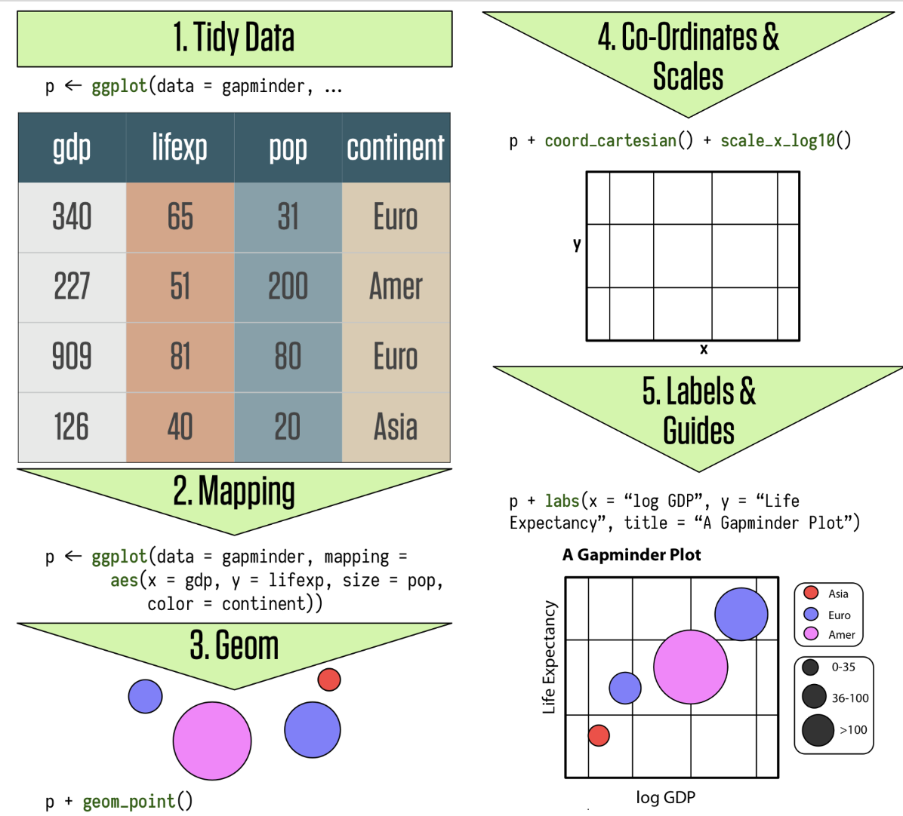
- ggplot2 follows the “grammar of graphics”
- Cheatsheet with the most relevant functions
- Extensions to ggplot2 that others built
A ggplot figure

Let’s start coding
- Go back to file 2_data_wrangling.R from https://sebastianstier.com/ma_css26/material.html
2. Large online platforms and platform regulation
Our two required readings
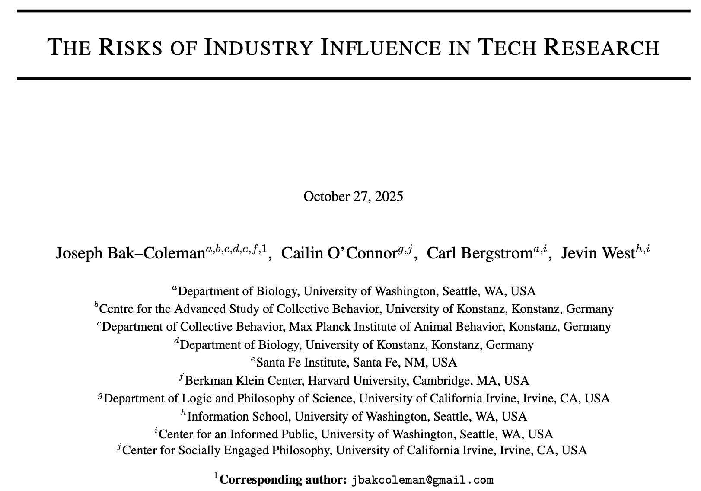
Pierri, F., Araujo, T., Kruikemeier, S., Lorenz-Spreen, P., Abeele, M. M. P. V., Vandenbosch, L., Gonçalves-Sa, J., & Grabowicz, P. A. (2025). Research Opportunities and Challenges of the EU’s Digital Services Act. arXiv.
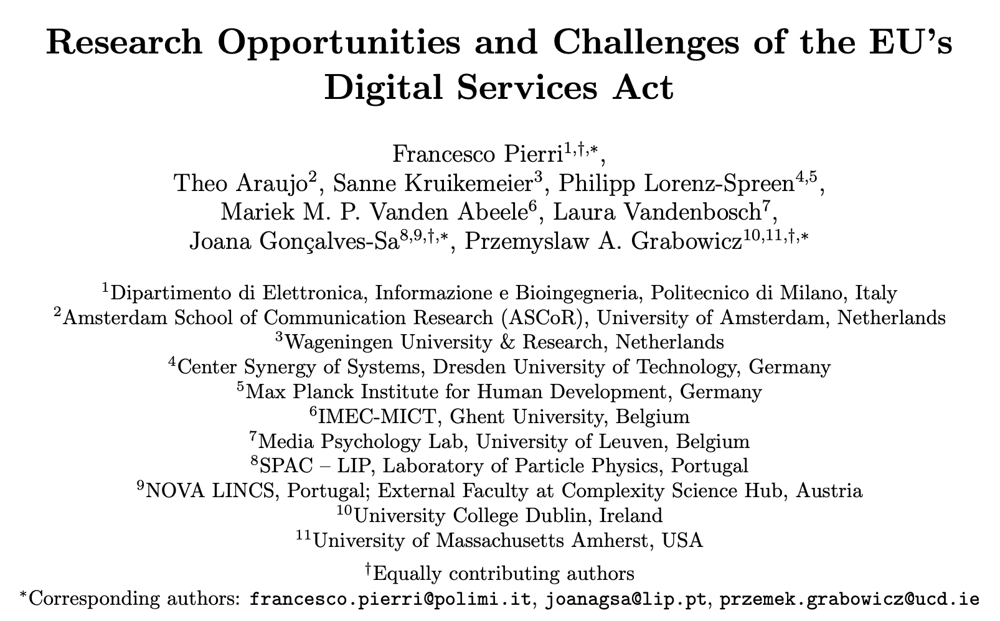
Bak-Coleman, J., O’Connor, C., Bergstrom, C., & West, J. (2025). The Risks of Industry Influence in Tech Research. arXiv.
Think-pair-share
- Discuss the literature for today with your neighbor (5 min).
- What are the current data access challenges and what solutions does the Digital Services Act (DSA) promise? What are potential obstacles to the DSA’s implementation?
- Share and discuss your results with the full class.
The big picture: Researcher access to online platform data
Online platforms are becoming increasingly important for society and democracy (Poell, Nieborg, and Van Dijck 2019)
Researchers need access to high-quality data for robust empirical evidence
API-based access to data for scientific research has been restricted by platforms in recent years
Solutions for data archiving and secondary data use are needed to enhance transparency and reproducibility
What are online platforms?
Various digital systems that facilitate interactions, transactions, or information exchange via the Internet.
This includes, but is not limited to, social media, search engines, shopping portals, AI chatbots.
Different eras of data access
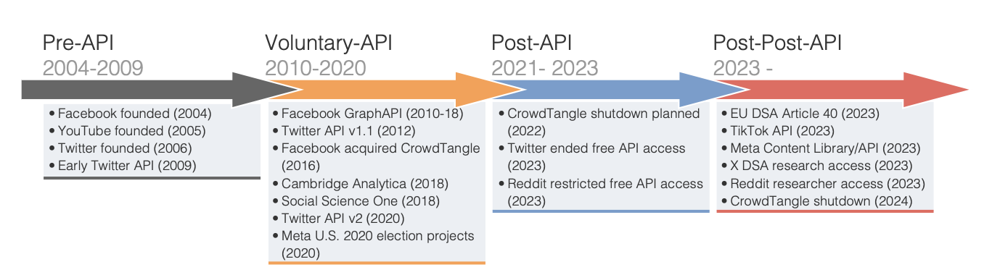
Mimizuka, K., Brown, M. A., Yang, K.-C., & Lukito, J. (2025). Post-Post-API Age: Studying Digital Platforms in Scant Data Access Times. arXiv
The EU’s Digital Services Act (DSA)
EU regulation for providers of Very Large Online Platforms (VLOPs) and Very Large Online Search Engines (VLOSEs)
- Liability and transparency obligations for platforms, with a particular focus on independent auditing
- Provisions regulating data access for researchers studying systemic risks in the EU
- Non-public data: Art. 40(4) DSA
- Public data: Art. 40(12) DSA
- Non-public data: Art. 40(4) DSA
Non-public platform data
Public data capture the behavior of only the 15–20% of platform users who create public content (Oswald et al. 2025)
Platform use is highly individualized and shaped by algorithmic content curation
Non-public platform data are needed to generate insights into platforms’ individual and societal effects
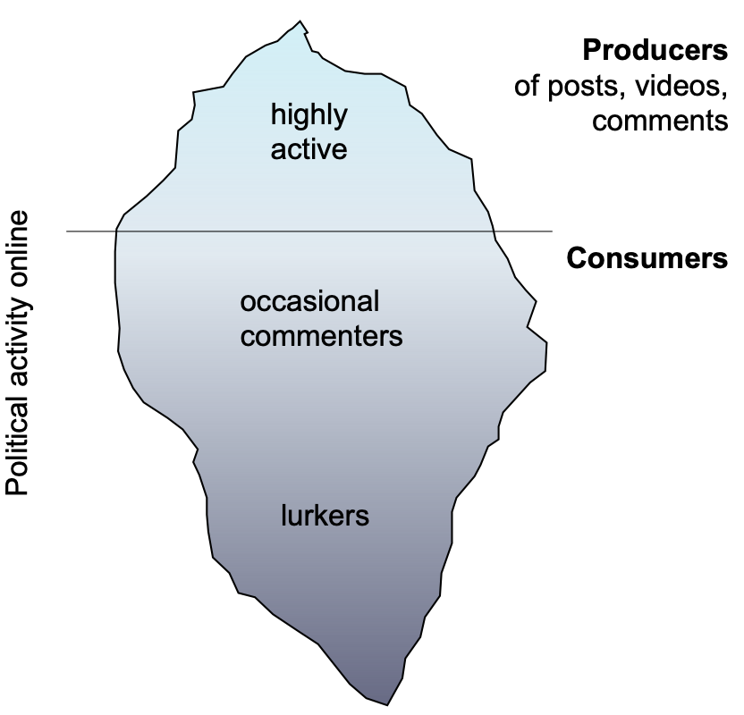
Oswald, L., Schulz, W., Hertwig, R., Lazer, D., & Stier, S. (2025). The Tip of the Iceberg: How the Social Media Production-Consumption Gap Distorts Public Opinion for Citizens and Researchers. SocArXiv.
Very Large Online Platforms and Search Engines
| VLOPs and VLOPSEs under the Digital Services Act | ||
|---|---|---|
| Platform | EU Country | Monthly Active Users in EU (Mio.) |
| AliExpress | Netherlands | 100.0 |
| Amazon Store | Luxembourg | 181.0 |
| Apple App Store | Ireland | 123.0 |
| Aylo Freesites (Pornhub) | Cyprus | 45.0 |
| Booking.com | Netherlands | 45.0 |
| Google Play | Ireland | 284.6 |
| Google Maps | Ireland | 275.6 |
| Google Shopping | Ireland | 70.8 |
| YouTube | Ireland | 416.6 |
| Shein | Ireland | 108.0 |
| Ireland | 177.7 | |
| Meta (Facebook) | Ireland | 259.0 |
| Meta (Instagram) | Ireland | 259.0 |
| Pinterest Europe | Ireland | 124.0 |
| Snapchat | Netherlands | 102.0 |
| TikTok | Ireland | 135.9 |
| X (Twitter) | Ireland | 115.1 |
| Temu | Ireland | 75.0 |
| XVideos | Czech Republic | 160.0 |
| Wikipedia | USA | 151.1 |
| Zalando | Germany | 74.5 |
| XNXX | Czech Republic | 45.0 |
| Google Search | Ireland | 364.0 |
| Bing | Ireland | 119.0 |
Does the Digital Services Act help students?
Maybe:
Digital Services Act Article 40(8)
“Vetted researchers” need to be “affiliated to a research organisation as defined in Article 2, point (1), of Directive (EU) 2019/790”, be “independent from commercial interests”, and “their application discloses the funding of the research.”
But researchers also need to demonstrate that “they are capable of fulfilling the specific data security and confidentiality requirements corresponding to each request and to protect personal data, and they describe in their request the appropriate technical and organisational measures that they have put in place to this end.”
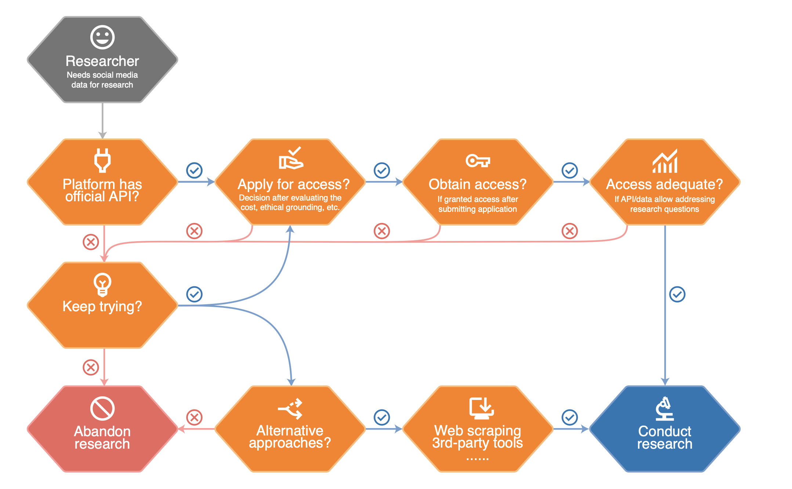
Mimizuka, K., Brown, M. A., Yang, K.-C., & Lukito, J. (2025). Post-Post-API Age: Studying Digital Platforms in Scant Data Access Times. arXiv
3. Introduction to web data collection and APIs
How to collect web data
Application Programming Interfaces (APIs)
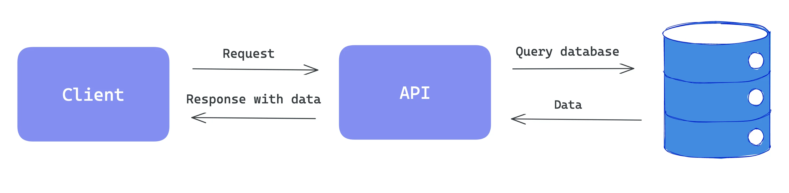
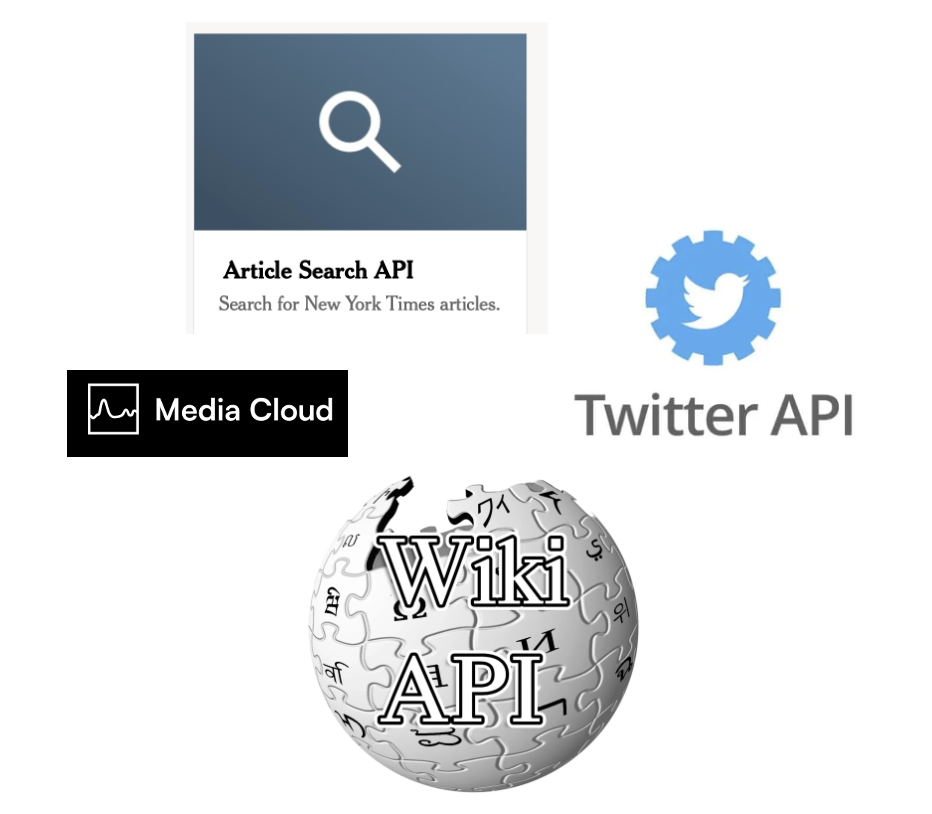
Web scraping
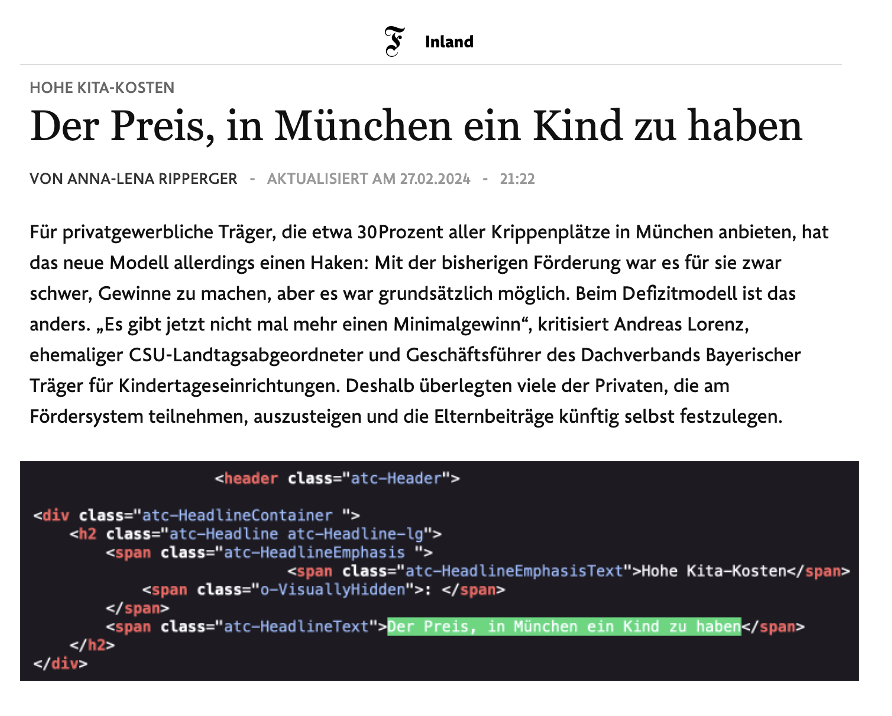
How does it look like in R?
APIs
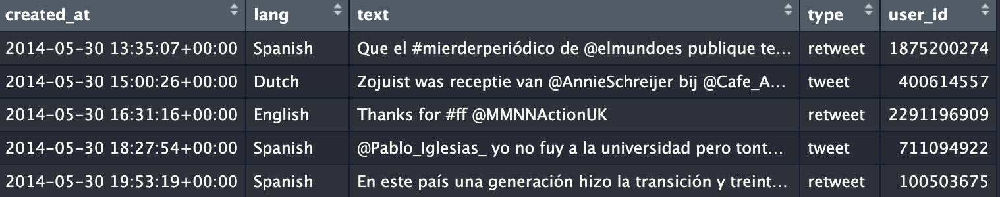
Web scraping
library(rvest)
url <- "https://rvest.tidyverse.org/articles/starwars.html"
html <- read_html(url)
section <- html |> html_elements("section")
head(section, 5){xml_nodeset (5)}
[1] <section><h2 data-id="1">\nThe Phantom Menace\n</h2>\n<p>\nReleased: 1999 ...
[2] <section><h2 data-id="2">\nAttack of the Clones\n</h2>\n<p>\nReleased: 20 ...
[3] <section><h2 data-id="3">\nRevenge of the Sith\n</h2>\n<p>\nReleased: 200 ...
[4] <section><h2 data-id="4">\nA New Hope\n</h2>\n<p>\nReleased: 1977-05-25\n ...
[5] <section><h2 data-id="5">\nThe Empire Strikes Back\n</h2>\n<p>\nReleased: ...How to (still) collect web data
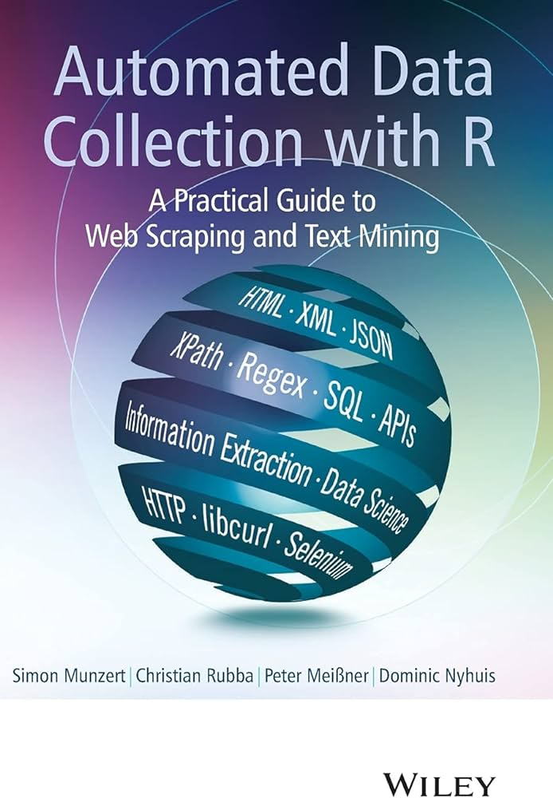
Homework
Browse through Bauer et al. and explore the options for collecting DBD. If you find the time, try a few of the proposed APIs and code snippets.
- Which APIs did you try out?
- Which APIs/code still work?
- Did the data help shape your research ideas?
Thank you for your attention! See you on 25 March 2026
References
Oswald, Lisa, Will Schulz, Ralph Hertwig, David Lazer, and Sebastian Stier. 2025. “The Tip of the Iceberg: How the Social Media Production-Consumption Gap Distorts Public Opinion for Citizens and Researchers.” SocArXiv. https://doi.org/10.31235/osf.io/frcv5_v1.
Poell, Thomas, David Nieborg, and José Van Dijck. 2019. “Platformisation.” Internet Policy Review 8 (4). https://doi.org/10.14763/2019.4.1425.